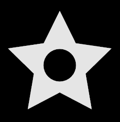
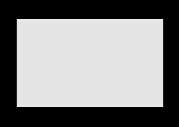
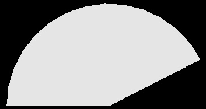
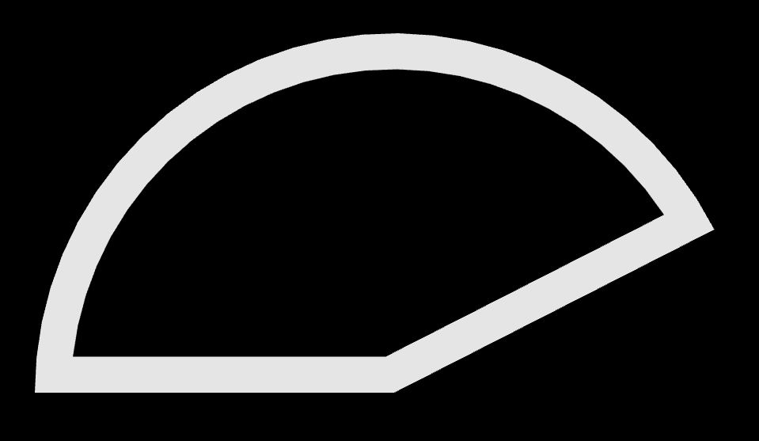
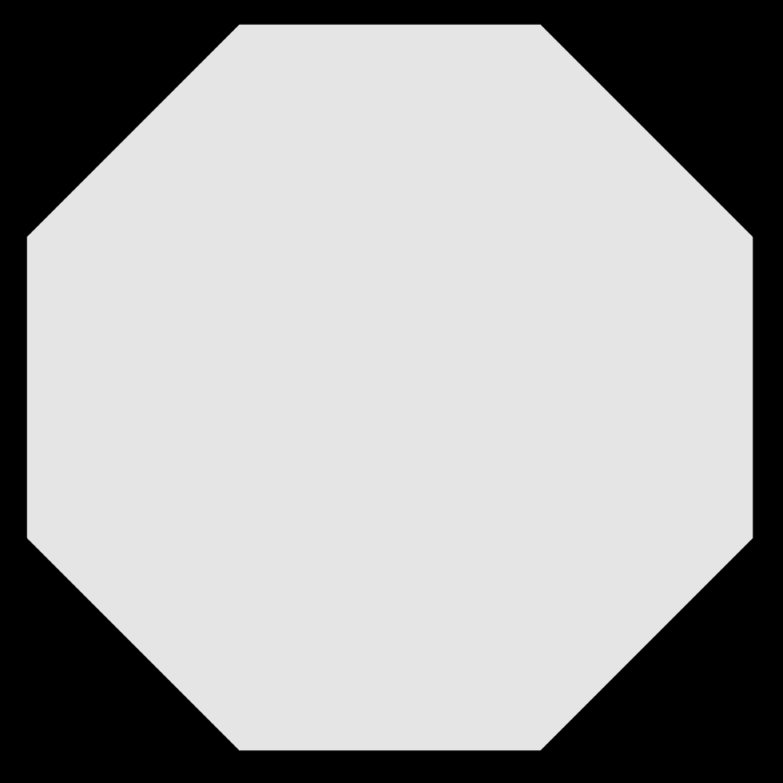
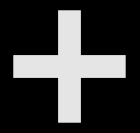
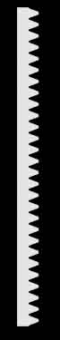

The shapes and paths libraries |
 |
The shapes and paths libraries are mainly used together with the 3D extrusion object. The shapes library helps in creating complex 2D shapes by creating and combining basic geometric shapes. In the shape shown above, a circular region has been removed from a star. The paths library is similar but provides lists of 3D points along which the 2D shape is extruded.
Choose one of the shapes that are available in these libraries:
Be sure to read about rectangle, which explains features common to all of these objects (rotate, scale, xscale, yscale, roundness, thickness, and invert).
rectangle
Position relative to the path
Making a path instead of a shape
circle
ellipse
arc
line
triangle
pentagon
hexagon
octagon
ngon
star
trapezoid
cross
points
gear
rack gear
List of parameters
rt = shapes.rectangle(width=10, height=6)
creates a list of 2D x-y coordinates of the corners of a rectangle of width=10 and height=6. If the height value is omitted the shape is a square with its sides equal to the given width. If you print rt you will see this list of 2D coordinates, starting at the lower right and continuing counterclockwise, end at the starting location:
[[5, -3], [5, 3], [-5, 3], [-5, -3], [5, -3]]
The shape can be visualized in VPython by executing the following statement, which extrudes the rectangular shape into the screen, along the line from vec(0,0,0) to vec(0,0,-0.1):
extrusion(path=[vec(0,0,0), vec(0,0,-0.1)], |
 |
A rotated rectangle can be obtained like this:
rt = shapes.rectangle(width=10, height=6, rotate=pi/6)
This produces a rectangle rotated counterclockwise pi/6 radians (30 degrees) around the path. A negative angle rotates the figure clockwise. |
 |
A rounded rectangle (a rectangle whose corners are rounded) can be obtained by using the roundness parameter:
rt = shapes.rectangle(width=10, height=6, roundness=0.1)
This creates a rectangle with its corners replaced by a circular arc of radius 0.6. The radius of this arc is calculated by multiplying the roundness parameter by the shortest side of the rectangle, the height in this case. A roundness of 0.1 is often a good choice. |
 |
An inverted rounding (called a chamfer) can be obtained by setting the invert parameter as True, together with the roundness parameter.
rt = shapes.rectangle(width=10, height=6, |
 |
The rectangle or its sides can be scaled by using the scale parameter:
rt = shapes.rectangle(width=10, height=6, scale=2)
effectively creates a rectangle of size 20 x 12. Width and height of a rectangle can be scaled independently by using xscale, yscale parameters:
rt = shapes.rectangle(width=10, height=6, xscale=2, yscale=0.5)
creates a rectangle of size 20 x 3.
All the previous definitions created solid rectangles covering the whole area defined by the width and the height of the rectangle. It is possible to define hollow rectangles – a rectangle with a rectangular hole, by using the thickness parameter:
rt = shapes.rectangle(width=10, height=6, |
 |
This defines a "rectangular frame" with a size 10 x 6, and a thickness of 0.1 times the shortest side of the rectangle, the height in this case. This results in a rectangle with a rectangular hole. Therefore there are two rectangular contours: One is the original rectangle of size 10 x 6 (the outer contour), and the second one is the hole of size 8.8 x 4.8 (0.1 times the short side of 6 gives a distance between the inner and outer contours of 0.6). The resultant shape is the area covered between these two contours. If the thickness parameter is not used, or if it is equal to zero, then there is no hole, and a solid rectangle is obtained.
Here is what rt is in this case of the rectangle with a hole:
[ [[5, -3], [5, 3], [-5, 3], [-5, -3], [5, -3]], [[4.4, -2.4], [4.4, 2.4], [-4.4, 2.4], [-4.4, -2.4], [4.4, -2.4]] ]
There are two lists. The first list describes the outer contour, and the next list describes the inner contour. If there are N holes in a shape, the first list in the shape is always the outer contour, and the next N lists represent the N holes.
In the examples discussed above, the center of the rectangle will be placed at the location of the extrusion path. You can displace the rectangular shape away from the extrusion path. In the following case the center of the rectangle will be 2 to the right and 1 above the path:
rt = shapes.rectangle(pos=[2,1], width=10, height=6)
Making a path instead of a shape
Just as the shapes library provides a convenient way to create 2D shapes to extrude, the paths library provides a convenient way to create 3D paths for the extrusion object. Here is an example:
extrusion(path=paths.rectangle(width=50, height=30),
shape=shapes.rectangle(width=10, height=3))
This produces a 50 by 30 rectangular path in the x-z plane along which is extruded a 2D rectangular shape perpendicular to the path. One can think of extrusions that use these shapes and paths functions (except for paths.line) as starting on the right with a 2D shape in the x-y plane, headed in the -z direction (into the screen), with the path going counterclockwise in the x-z plane as seen from above. If you print paths.rectangle(width=50, height=30), this is what it looks like, a list of 3D positions in the y=0 (xz) plane:
[ < 25, 0, 15 >, < 25, 0, -15 >, < -25, 0, -15 >, < -25, 0, 15 >, < 25, 0, 15 > ]
IYou can tip the extrusion out of the x-z plane by changing the extrusion's default "up" attribute (<0, 1, 0>) to something else, such as <0,0,1>, in which case the plane of the extrusion path will be in the x-y plane.
Note that you cannot specify a thickness for a path. A path has no thickness whereas a shape can have a thickness as discussed above.
All of the following shapes discussed below have path versions: paths.rectangle(), paths.circle(), paths.ellipse(), paths.arc(), paths.line(), paths.triangle(), paths.pentagon(), paths.hexagon(), paths.octagon(), paths.ngon(), paths.star(), and paths.cross(). There are no path options corresponding to shapes.points(), shapes.gear(), and shapes.rackgear().
cr = shapes.circle(radius=2) |
 |
creates a circle object at pos=[0,0] relative to the path, with radius=2. By default, 64 points are used to approximate the circular contour; you can change this by specifying a value for np. The circle contour cannot be rounded. A circle can be scaled to obtain a different size circle or an ellipse.
A circular ring is obtained if the thickness attribute is set to a positive value. If the thickness is 0.1, the actual thickness will be 0.1 times the radius. |
 |
For the circle, the starting angle is by default angle1=0 and the ending angle2 = 2*pi, measured counterclockwise from the +x axis. This partial circle was made by setting angle1=0.15*pi and the ending angle by angle2=pi. You can rotate the shape by specifying rotate to be something other than zero. |
 |
You can specify a (positive) thickness for a partial circle. If the thickness is 0.1, the actual thickness will be 0.1 times the radius. |
 |
el = shapes.ellipse(width=5, height=3) |
 |
This creates an ellipse object at pos=[0,0], with width=5 and height=3. If height is omitted it is set to be equal to the width, which causes the output to be a circle. The ellipse can be rotated and scaled but not rounded. An elliptical ring is obtained if the thickness parameter is set to a positive value.
For the ellipse, the starting angle is by default angle1=0 and the ending angle by angle2 = 2*pi, measured counterclockwise from the +x axis. A partial ellipse can be made by setting angle1=0.15*pi and angle2=pi.
ar = shapes.arc(radius=2, angle1=0, angle2=pi/2) |
 |
creates a quarter-circular arc centered at pos=(0,0), with radius=2. The arc can be rotated and scaled, but not rounded. If no thickness is specified, the arc is given a very small thickness so that the contour is closed.
L = shapes.line(start=(1,0), end=(1,1), np=20)
creates a straight line going from [1,0] to [1,1], divided into 20 equal lengths. The line can be rotated and scaled but not rounded. If no thickness is specified, the line is given a very small thickness so that the contour is closed. The defaults are pos=[0,0], start=[0,0], end=[0,1],
tr = shapes.triangle(length=5) |
 |
creates a triangle object at pos=[0,0], with all sides equal to 5. The triangle can be rotated and rounded as well as scaled. A triangular frame is obtained if the thickness parameter is set to a positive value.
A triangular frame is obtained if the thickness parameter is set to a positive value. If the thickness is 0.1, the actual thickness will be 0.1 times the length of a side. |
 |
pt = shapes.pentagon(length=5) |
 |
creates a pentagon object at pos=[0,0], with all sides equal to 5. The pentagon can be rotated and rounded as well as scaled. A pentagonal frame is obtained if the thickness parameter is set to a positive value. If the thickness is 0.1, the actual thickness will be 0.1 times the length of a side.
hx = shapes.hexagon(length=5) |
 |
creates a hexagon object at pos=[0,0], with all sides equal to 5. The hexagon can be rotated and rounded as well as scaled. A hexagonal frame is obtained if the thickness parameter is set to a positive value. If the thickness is 0.1, the actual thickness will be 0.1 times the length of a side.
oc = shapes.octagon(length=5) |
 |
creates an octagon object at pos=[0,0], with all sides equal to 5. The octagon can be rotated and rounded as well as scaled. An octagonal frame is obtained if the thickness parameter is set to a positive value. If the thickness is 0.1, the actual thickness will be 0.1 times the length of a side.
poly = shapes.ngon(np=7, length=5) |
 |
creates a heptagon object at pos=[0,0], with all seven sides equal to 5. The heptagon can be rotated and rounded as well as scaled. One can also create an ngon object to fit into a circle with a given radius. In this case the length is calculated automatically:
poly = shapes.ngon(np=7, radius=4)
The thickness parameter can be used to create a frame of shape of the ngon. If the thickness is 0.1, the actual thickness will be 0.1 times the length of a side.
st = shapes.star(n=5) |
 |
creates a star object at pos=[0,0], with 5 beams sticking out (the default), fitting into a circle of radius=1. As you change the radius value, the beam length changes accordingly, with concave vertices remaining on their original positions. You can specify iradius to change the inner radius for the star object; default = 0.5*radius
st = shapes.star(n=6, radius=3, iradius=1)
creates a 6-pointed star with outer radius=3, where the tips of the beams are located, and the inner radius=1, where the concave vertices reside. The star can be rotated and rounded as well as scaled. If you specify a thickness, the shape is hollow.
tr=shapes.trapezoid(pos=[-2,3], |
 |
creates an isosceles trapezoid object with its center at pos=[-2,3] with respect to the extrusion path, with width=5 (the width of the base), height=1, and top=3. If top is omitted, it is set to be equal to half of the width. The trapezoid can be rotated and rounded as well as scaled. A trapezoidal frame is obtained if the thickness paramater is set to a positive value. If the thickness is 0.1, the actual thickness will be 0.1 times the length of the shortest side.
st = shapes.cross(width=10, thickness=2) |
 |
creates a object in the shape of a cross, with arms that are 10 across by 2 wide. The very different use of "cross" in the cross product of vectors is not a problem since shapes.cross is different from cross.
pl = shapes.points(pos=[ [1,0], [1,1], [-2,3], [1,0] ],
rotate=pi/4)
creates a polygon of the shape defined by the list of [x,y] points provided. The list of points can be prepared manually or by programs using any algorithm. The shape can be rotated and rounded as well as scaled.
g = shapes.gear() |
 |
creates an object in the shape of a "spur" gear. The gear can be scaled uniformly, but not rounded, nor given a thickness. Like shapes.rectangle, the position of the shape is its center, but you can move that center relative to the extrusion path, like this: shapes.gear(pos=[1,-1]).
For a detailed description of gears please refer to https://en.wikipedia.org/wiki/Gear. Be sure to click to enlarge the diagram that explains gear nomenclature. It mentions “involute gears” which are discussed at https://en.wikipedia.org/wiki/Involute_gear. These links open in new tabs or windows.
Gears are used to transmit motion by changing the rotational speed and direction with associated torque. Gear parameters define the way the gear behaves. These parameters must be in a harmony among each other to obtain a well defined gear. Not all parameters are provided in this program to fully control the gear structure. Some of them are calculated by using the others, hence may result in an inconsistent gear structure. The user is responsible to provide a consistent set of parameters.
radius The radius is from the center of the gear to a point about one-half tooth height from the outer edge of a tooth. As a result, placing the centers of two identical gears two radii apart results in the gears meshing appropriately for many purposes. By default other gear parameters are derived from the radius. The default radius is 1.
n An integer number defining the number of teeth of the gear. Normally, “tooth size” and the number of teeth should define the gear circumference (or the radius), but in this program the “tooth size” is not a control parameter, rather it is calculated from the number of teeth and the radius. Hence the number of teeth, n, can be set arbitrarily and some unrealistic values for the “tooth size” can be obtained in turn. The user should be setting the parameters appropriately to obtain a reasonable tooth structure. The default number of teeth is 20.
phi Coupled gears exert force on each other on the tooth profile during rotation. Phi is called the Pressure Angle, which is one of the basic parameters defining the tooth profile for a better contact. Also, “tooth size” components like bottom-land (roughly the gap between two teeth at the bottom of the teeth) and top-land (tooth thickness at the very top) are calculated using the pressure angle. Default value for the pressure angle is 20 degrees.
addendum The “tooth depth” is defined as the sum of addendum and dedendum. Addendum is the part of the tooth above the radius to the tip of the tooth. Default value for addendum is 0.08 times the radius.
dedendum Dedendum is the part of the tooth below the pitch radius to the depth of the tooth. Default value for dedendum is 0.1 times the radius.
fradius Bottom filet radius, fradius defines the radius of curvature at the bottom of the tooth between the bottom-land and the tooth. Default value for fradius is 0.02 times the radius.
pos, rotate, and scale parameters are the same as for other objects. xscale and yscale are not allowed to be set independently as the resulting object will not be a meaningful one. Roundness is not available..
res This parameter defines the drawing mesh resolution and does not affect the gear structure. Since most of the mesh points are on a circle, or on a curve defining the tooth profile, res is used to control curvature resolution at varying scales for different parts of the mesh. The default value for res is 1.0, and a better resolution is obtained as res is increased.
Inward-pointed gear teeth
You can make a gear with inward-pointing teeth by combining a circular outer shape with an innner gear shape:
outer = shapes.circle(radius=1) # a disk |
 |
rg = shapes.rackgear() |
 |
creates a shape of a rack gear, which is a linear stack of teeth. The gear can be scaled uniformly, but not rounded, nor given a thickness. Like shapes.rectangle, the position of the shape is its center, but you can move that center relative to the pos curve, like this: shapes.rackgear(pos=([1,-1]).
Since rack gears are driven by an ordinary spur gears, the rack gear tooth profile is created according to the driving spur gear tooth profile. Therefore the same parameters apply to create the proper tooth profile (but different, due to its rectilinear motion).
There is an additional parameter, length, which is used to define the linear length of the gear. The actual length of the final object is different by an amount of +/- tooth-length/2, since the actual length is obtained after the calculation of the tooth-length by using other (spur) gear parameters, and then the nearest length which is an integer multiple of tooth-length is obtained.
This list defines the parameters used in defining the 2D shapes.
pos Position: the 2D center of the shape relative to the extrusion path; default = [0,0]. For the shape.points object, a list of [x,y] positions.
radius The radius of the circle, default = 1. It is used as the radius of the circle object, as well as the default radius value for the star object's outer radius, and for the ngon object, if the length parameter is not provided.
length Length of 2D objects like pentagon, hexagon, ngon, default = 1
width Width of 2D objects like rectangle, ellipse, default = 1
height Height of 2D objects like rectangle, ellipse, default = equal to width except for ellipse, where it is 0.5 times the width
rotate Rotation angle in radians about the center of the 2D object, default = 0. A positive value gives a counterclockwise rotation; a negative value rotates clockwise.
np Number of sides of a polygon to approximate objects like circle and ellipse (default = 32); for ngon, np is the number of sides (default = 3).
n The number of outward-going beams on a star (default = 5).
iradius Inner radius for the star object, default = 0.5*radius.
thickness Parameter to be used to create hollow shapes. If it is set to a positive value the size of the hole is calculated as (1 – 2*thickness)*min(sides). The default value for the thickness parameter is zero, hence no holes. Suggested value = 0.1.
roundness Radius of curvature for the sharp corners of 2D objects to be rounded. It is used to obtain 2D shapes like rectangle, triangle, star with rounded corners, default = 0. When specifed as larger than zero, the radius is calculated by multiplying the roundness by the shortest length. For example, if roundness=0.20, this means the radius will be 20% of the smallest length of a polygon. Suggested value = 0.1.
invert When used together with the roundness parameter, a circular chamfer (curving in at a corner) is created as opposed to a rounded corner, default = False.
scale Scaling multiplier to resize the shape object in both x and y directions, default = 1
xscale Scaling multiplier in x direction only, default = 1
yscale Scaling multiplier in y direction only, default = 1
See the description of shapes.gear for information about its many special attributes.